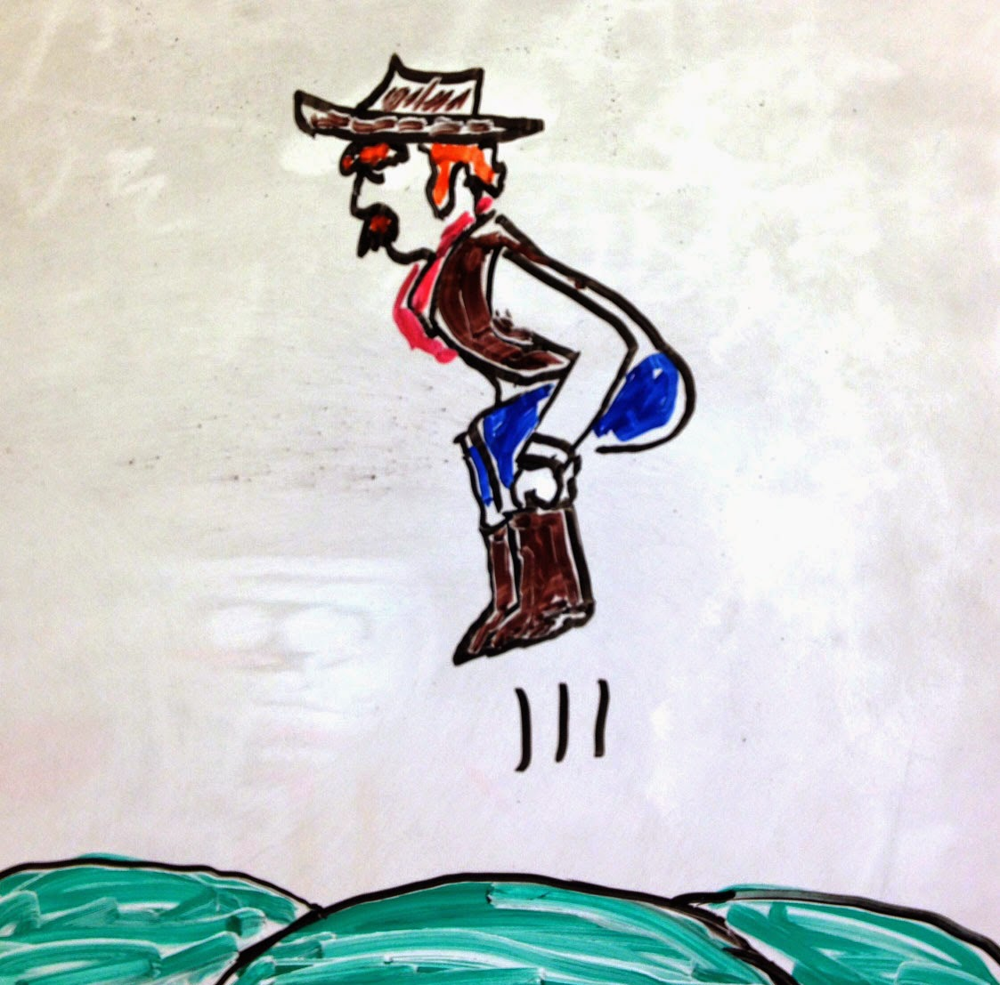

Simulation-based Inference üíª
MATH 4780 / MSSC 5780 Regression Analysis
Rent in Manhattan
How much do you think it costs to rent a typical 1 bedroom apartment in Manhattan?

Parameter of Interest
- Could focus on the median rent or mean rent depending on our research goal.

Bootstrap Population

Source: Figure 12.1 of Introduction to Modern Statistics
Bootstrap Sampling

Source: Figure 12.2 of Introduction to Modern Statistics
Practical Bootstrap Sampling

Source: Figure 12.4 of Introduction to Modern Statistics
R Lab infer üì¶ in tidymodels
The objective of this package is to perform statistical inference using an expressive statistical grammar that coheres with the
tidyverseframework.


R Lab Visualize the Bootstrap Distribution

R Lab Calculate the CI

Bootstrap Sample 1


Bootstrap Sample 2


Bootstrap Sample 3


Bootstrap Sample 4


Bootstrap Sample 5


so on and so forth…
Bootstrap Samples 1 - 5


Bootstrap Samples 1 - 100


Slopes of bootstrap samples
Warning: Using `size` aesthetic for lines was deprecated in ggplot2 3.4.0.
ℹ Please use `linewidth` instead.

Bootstrapped CI


- A 95% confidence interval is bounded by the middle 95% of the bootstrap distribution.
R Lab Histogram of Bootstrap Samples
- BC\(_a\) is the accelerated bias-corrected percentile interval.

R Lab car::Confint()
Standard errors computed by vcov(car_boot) Estimate 2.5 % 97.5 %
(Intercept) 3.32 -0.611 7.25
cases 2.18 1.613 2.74